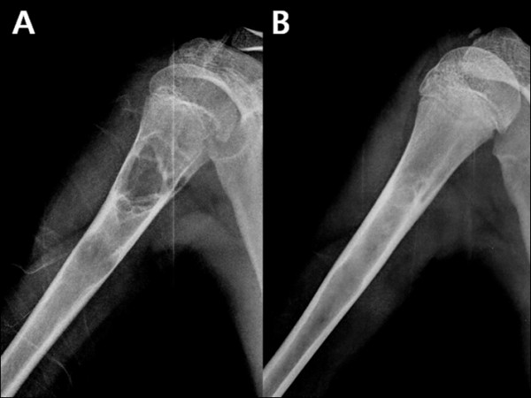

Ficha del catálogo
Quiste óseo simple
- Sistema
- Óseo
- Modalidad
- RX
- Región
- Húmero y fémur proximales
- Dificultad
- Básico
Lesión ósea benigna llena de líquido que aparece en la metáfisis de huesos largos durante la infancia y adolescencia, sobre todo en el húmero proximal. Suele ser asintomática y se descubre al producirse una fractura patológica tras un traumatismo menor. Con el crecimiento tiende a migrar hacia la diáfisis y a resolverse.
Técnica
Radiografía en dos proyecciones del hueso afectado, suficiente en la mayoría de los casos por la morfología característica de la lesión.
Qué observar
- Lesión lítica central, bien delimitada y con borde esclerótico fino
- Localización metafisaria adyacente a la fisis, sin cruzarla
- Adelgazamiento cortical sin destrucción ni masa de partes blandas
- Ligera expansión ósea que no supera el ancho de la fisis
- Fragmento óseo caído en el fondo de la cavidad tras una fractura
- Ausencia de reacción perióstica salvo que exista fractura
Hallazgos
Lesión lítica metafisaria central y bien definida con adelgazamiento cortical, sin agresividad ni masa asociada.
Perlas
El fragmento cortical desprendido que cae al fondo de la cavidad indica que la lesión está llena de líquido y confirma su naturaleza quística. Es un signo sencillo y muy útil ante una fractura patológica en un niño.
Diagnóstico diferencial
- Quiste óseo aneurismático
- Lesión expansiva excéntrica con niveles líquido-líquido en resonancia.
- Displasia fibrosa
- Matriz en vidrio esmerilado y deformidad ósea progresiva.
- Fibroma no osificante
- Lesión excéntrica cortical con borde festoneado esclerótico.
Simuladores
- Canal medular ensanchado normal
- Lesión fibrosa metafisaria
- Artefacto de proyección oblicua
Por modalidad
- RX
- Habitualmente suficiente para el diagnóstico
- RM
- Confirma el contenido líquido homogéneo
- TC
- Valora el riesgo de fractura por adelgazamiento cortical
Protocolo
Dos proyecciones ortogonales. Resonancia solo si la morfología es atípica o si se plantea tratamiento.
Clasificación
Se describe como activo cuando contacta con la fisis y latente cuando se ha separado de ella con el crecimiento.
Errores frecuentes
- Sobrediagnosticar agresividad por la fractura patológica acompañante
- Confundirlo con el quiste aneurismático por la expansión leve
- Indicar biopsia en una lesión con criterios radiológicos claramente benignos

quiste oseo simple fragmento caido humero fractura patologica pediatria lesion litica